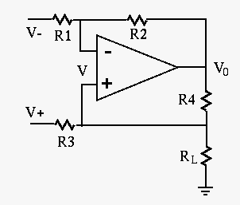
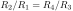
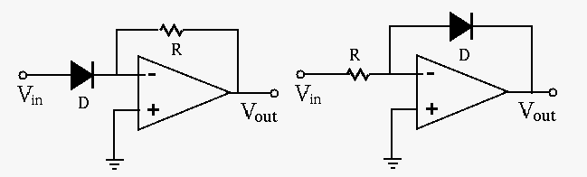

Next: About this document ... Up: HowlandCurrentSource Previous: HowlandCurrentSource

Assuming
, we can show that the output current
through the load  is a constant determined by the input
voltages and
is a constant determined by the input
voltages and  , as well as the circuit parameters.
, as well as the circuit parameters.
| (1) |
 , we get
, we get
| (2) |
| (3) |
 through the load resistor
, independent of , i.e., the circuit
is a current source.
through the load resistor
, independent of , i.e., the circuit
is a current source.
Logarithmic and Exponential Amplifiers

Based on the relationship between the current through and voltage across a diode and the virtual ground assumption, we can show that the output voltage of the exponential amplifier (left) is approximately an exponential function of the input voltage, and the output voltage of the logarithmic amplifier (right) is approximately a logarithmic function of the input voltage.
First, the current  through and voltage across a diode
are related by:
through and voltage across a diode
are related by:
| (4) |
 ,
,  and
and  are some parameters, and
is large enough so that
.
are some parameters, and
is large enough so that
.
| i.e. | (5) |
| i.e. | (6) |
| (7) |
| (8) |